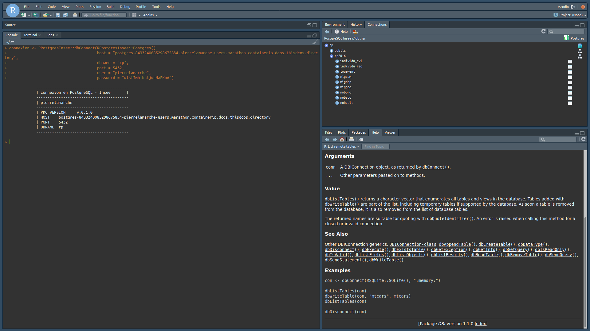

Ce tutoriel illustre la connexion depuis R à une instance Postgres qui contient les données du Recensement de Population 2016, disponibles sur le site de l’Insee. L’instance en question a été déployée sur la plateforme Onyxia du SSPCloud, et n’est accessible que depuis cette plateforme.
On montera quelques usages que l’on peut faire à partir de cette instance et en quoi combiner R et Postgres est utile.
Les données du Recensement de Population sont assez volumineuses ; pour les données de 2016, elles représentent environ 63 Go. Il est par conséquent illusoire de vouloir travailler avec l’ensemble de ces données chargées simultanément en mémoire avec R. La seule table logement contient 25 millions de lignes et peut déjà représenter une difficulté pour certaines machines. Ces contraintes d’espace tombent avec un système de base de données.
RComme indiqué dans la documentation UtilitR, il est possible d’utiliser différents packages pour se connecter à la base de données. Quelle que soit la solution utilisée, il faut disposer de cinq paramètres pour générer la connexion à la base de données :
Dans l’exemple qui nous intéresse, l’URL de la base de données est la suivante :
## [1] ""Le nom de la base de données est rp, le port 5432. On se connecte avec un identifiant générique d’utilisateur, user_read. Cet identifiant a été créé pour permettre à tous ceux qui souhaitent se connecter à la base de données de le faire, sans toutefois leur permettre de modifier la base en question ; c’est pour cette raison qu’on parle d’accès en lecture. Le mot de passe, lui aussi partagé, est le suivant : RP2016Insee.
On va donc créer un objet connexion pour se connecter à la base de données, en utilisant les informations décrites ci-dessus, et en utilisant la fonction dbConnect du package RPostgres. C’est au travers de cet objet connexion qu’on va passer pour toutes les requêtes que l’on souhaite soumettre à la base de données. En utilisant le package RPostgres, la connexion se fait de la manière suivante :
### création d'un objet connexion
library(DBI)
connexion <- dbConnect(RPostgres::Postgres(),
host = "192.168.1.24",
dbname = "rp",
port = 5432,
user = "user_read",
password = "RP2016Insee")
### lister les tables du schéma rp2016
dbGetQuery(connexion, "select tablename from pg_catalog.pg_tables where schemaname = 'rp2016'")Dans l’usage courant, il est fortement déconseillé d’inscrire “en dur” les identifiants de connexion tels que le mot de passe ou même l’identifiant. Utiliser des fonctions telles que rstudio::askForPassword permet un usage interactif du code, sans dévoiler des éléments confidentiels tels que les identifiants de connexion.
Sous RStudio, il est possible de visualiser la structure de la base de données à laquelle on est connecté dans l’onglet Connections dans le panneau en haut à droite de l’écran.

Pour cela, deux solutions :
odbc disponible sur le CRAN, mais qui nécessite l’installation de librairies sytème ;RPostgresInsee que l’on peut installer avec la commande remotes::install_github("pierre-lamarche/RPostgresInsee").Dans le premier cas, le code pour créer la connexion avec la base de données se présente comme suit :
library(DBI)
connexion <- dbConnect(odbc::odbc(),
driver = "Postgres Unicode",
server = "192.168.1.24",
database = "rp",
port = 5432,
uid = "user_read",
pwd = "RP2016Insee")Dans le second cas, la syntaxe est légèrement différente (mais très proche de celle utilisée pour le package RPostgres) :
library(DBI)
connexion <- dbConnect(RPostgresInsee::Postgres(),
host = "192.168.1.24",
dbname = "rp",
port = 5432,
user = "user_read",
password = "RP2016Insee")Pour soumettre des requêtes sur la base de données à partir de R une fois la connexion établie, il existe deux solutions :
dbSendQuery et dbGetQuery ;dbplyr, qui permet de recourir à une syntaxe très similaire à celle de tidyverse.À partir du package DBI, il est possible de soumettre des requêtes SQL sur la base de données en utilisant deux fonctions de ce package, la fonction dbSendQuery pour laquelle on soumet une requête sans en récupérer le résultat, et la fonction dbGetQuery pour laquelle on récupère le résultat.
Ainsi, par exemple, sur les données du RP, on peut créer une table intermédiaire - stockée dans le base de données - pour laquelle on crée une indicatrice pour chaque logement sur le fait d’être une résidence principale ou non. Puis on récupère en mémoire le nombre de résidences principales par département.
library(DBI)
connexion <- dbConnect(RPostgres::Postgres(),
host = "192.168.1.24",
dbname = "rp",
port = 5432,
user = "user_read",
password = "RP2016Insee")
### création d'une table temporaire avec une indicatrice résidence principale par logement
dbSendQuery(connexion, "create temp table res_princ as
select substr(commune, 1, 2) as departement, case
when catl = '1' then 0
else 0
end as res_princ
from rp2016.logement")
### récupération de la somme par département de l'indicatrice
compte_rp <- dbGetQuery(connexion, "select distinct departement, sum(res_princ) as nb_res_princ
from res_princ group by departement")
compte_rpdbplyrR. Les traitements doivent être prioritairement réalisés